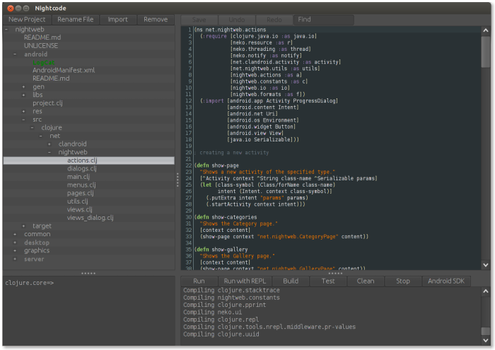
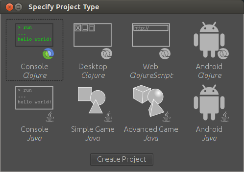
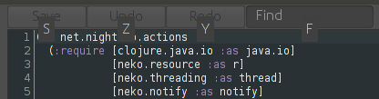

Nightcode
Download Version 0.0.1

What is it?
Nightcode is the only thing you need to create Clojure and Java projects for the command line, the desktop, the web, and Android -- besides JDK 6 or above. Whether you choose to make a Clojure or pure Java project, Nightcode will use its built-in copy of Leiningen to build and run your code.
Built-in templates

You can easily start a console or Android project in either language. Additionally, for Clojure, you can start a desktop project that uses the excellent seesaw library, and a web project to get started with ClojureScript. Lastly, for Java, you can start a simple or advanced game project, which creates a mini2Dx or LibGDX project respectively, which can be compiled for either the desktop or Android.
Keyboard friendly

Hold down the control key, and you'll see shortcut hints appear over every applicable widget. Pressing control + up/down/enter will move your selection in the project tree and expand/collapse directories.
Clojure integration
The REPL pane on the bottom-left is a convenient scratchpad to try out Clojure commands. The build pane on the bottom-right gives you access to all the important Leiningen commands to run, build, and test your project. This makes Nightcode the easiest way to get started with Clojure.
Java integration
Nightcode works with pure Java projects as well, including standard Android projects. You can start one with one of the built-in templates, or you can import one and it will prompt you to create a project.clj file. You'll need to edit it a little bit so the Leiningen knows how to build the project. You may find that it's a much nicer build system than whatever you were using before.
Android integration
For Android projects, the "Run" button builds and installs your app on your connected device. The "Build" button creates a release version of the app and lets you sign it. In addition, Android projects have a special "LogCat" item in the sidebar, which will show your device's or emulator's logs.